Ảnh chụp trực tiếp từ bản Mac Unity. Main Menu dùng sinh vật 3D thật. Bấm ảnh để xem nguyên kích thước.
50 bài giải Spatial + 50 hồi quy Origin + 23 test UI / audio / Intro đã được kiểm chứng. Chưa đo hiệu năng hay test cảm giác chạm của bản UI này trên OPPO.
Mockup đã duyệt · Chi tiết triển khai và kiểm thử · Kết quả test
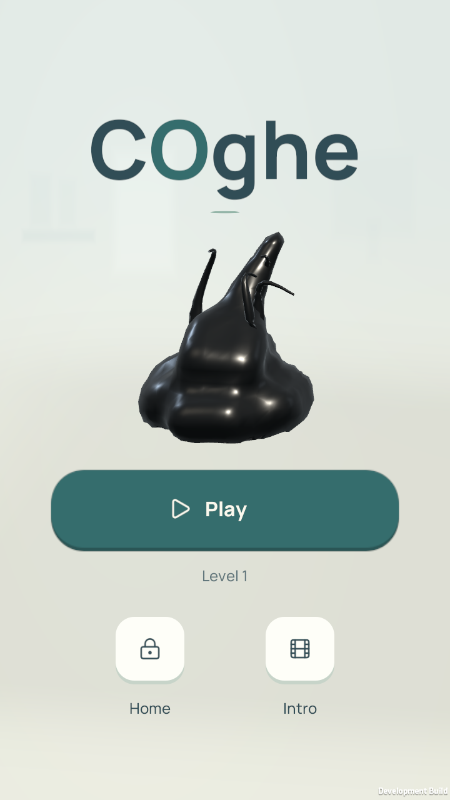
Sinh vật 3D thật, chuyển động trong Unity; chạm để chào.
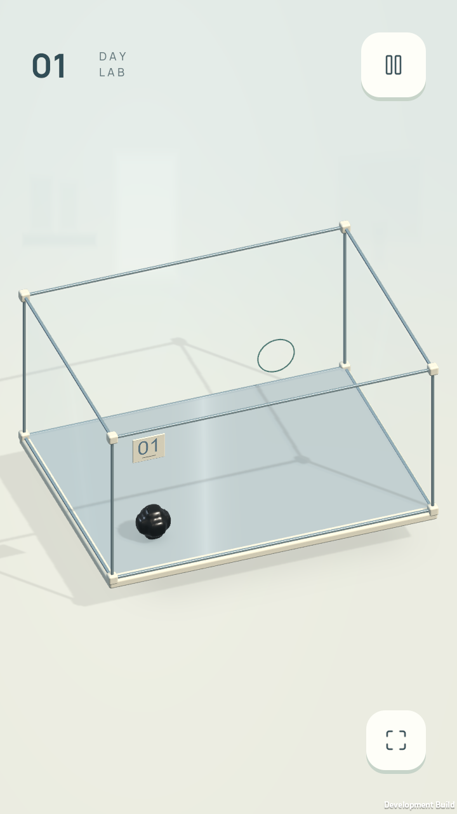
Tiếng Anh, icon tối giản, không có chọn màn.
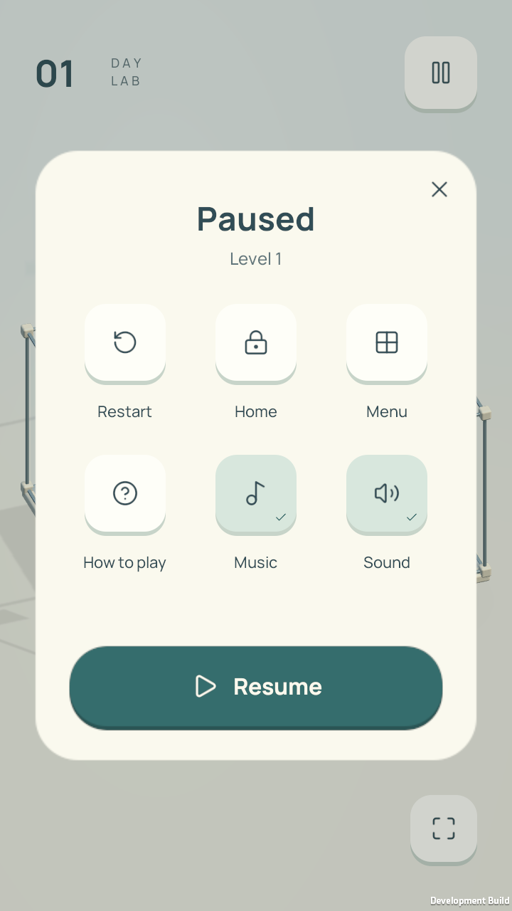
Restart / Home / Menu / Help; Music và Sound độc lập.
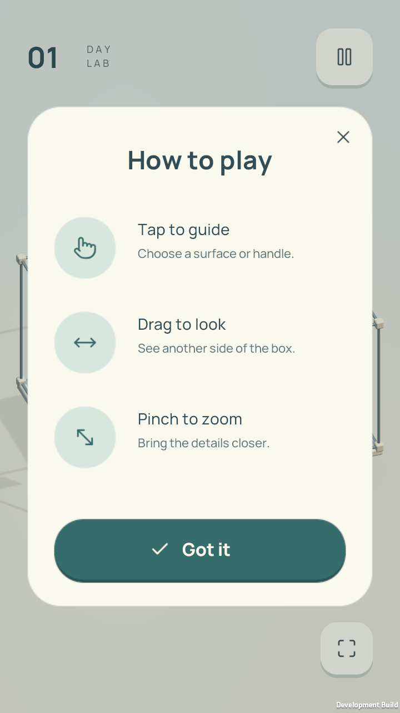
Ba thao tác cơ bản, không tiết lộ lời giải Boss.
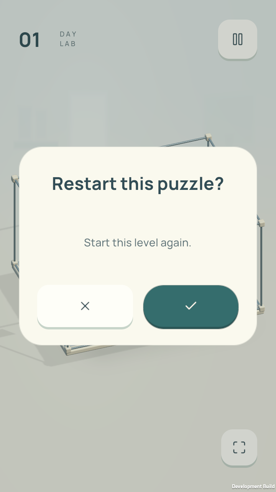
Xác nhận trước khi bỏ lượt chơi hiện tại.
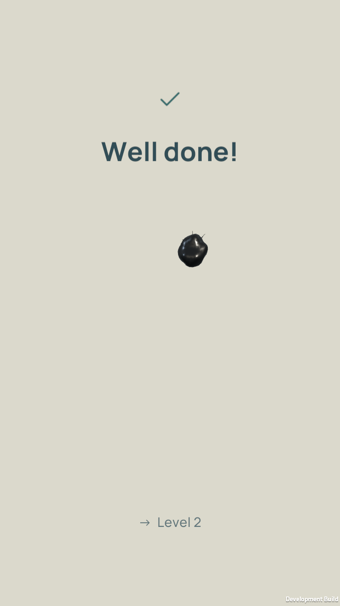
Cận cảnh ăn mừng trước khi tự chuyển màn.
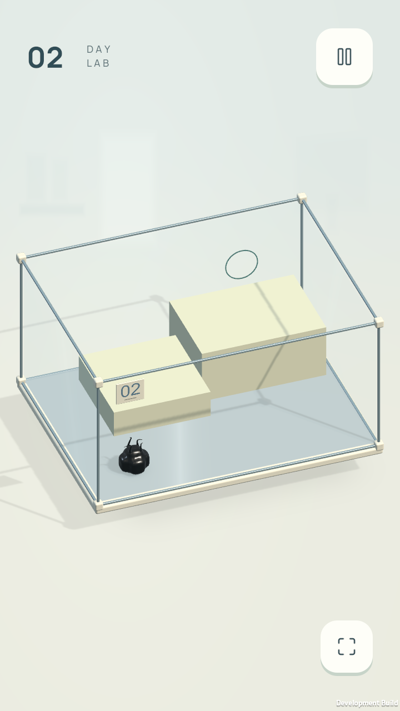
Native Mac đã tự sang màn 2 sau khi giải màn 1.
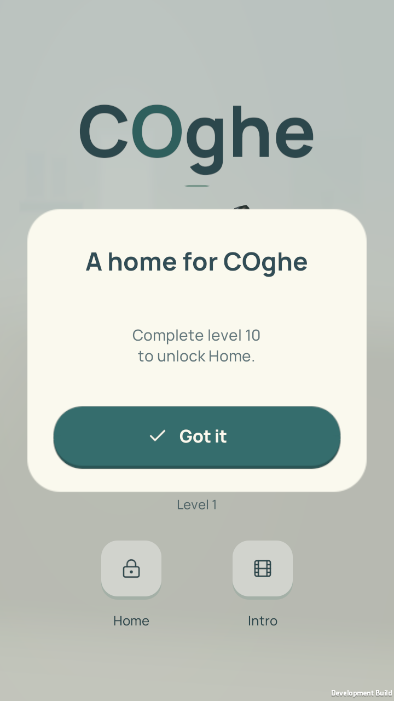
Mở sau Boss 10; Menu không tự mở khóa.
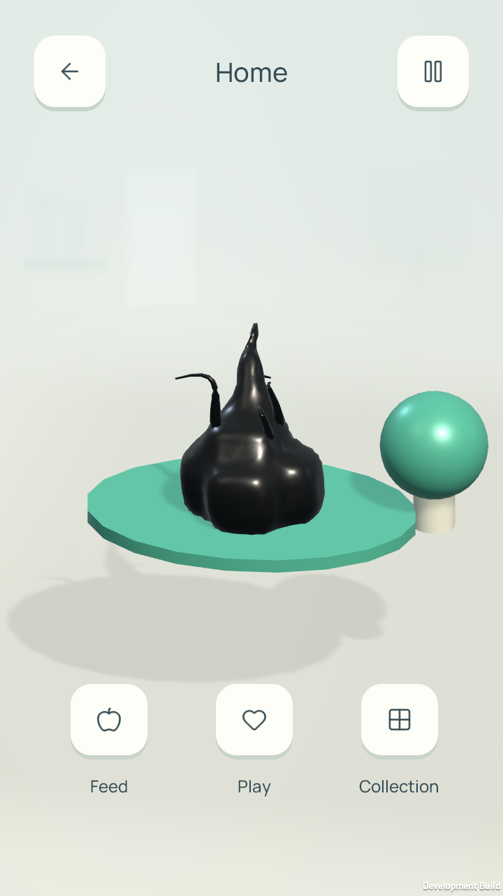
Các tương tác Feed và Play hiện có.
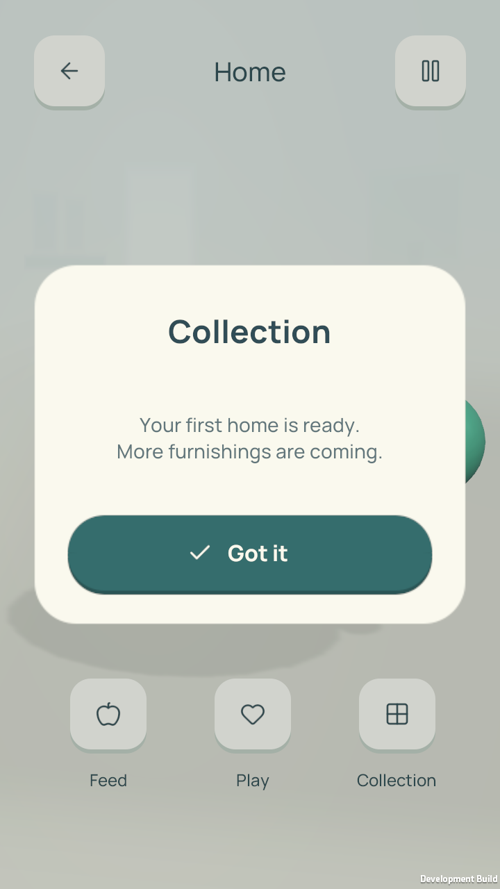
Chưa triển khai cửa hàng nội thất trong đợt UI này.
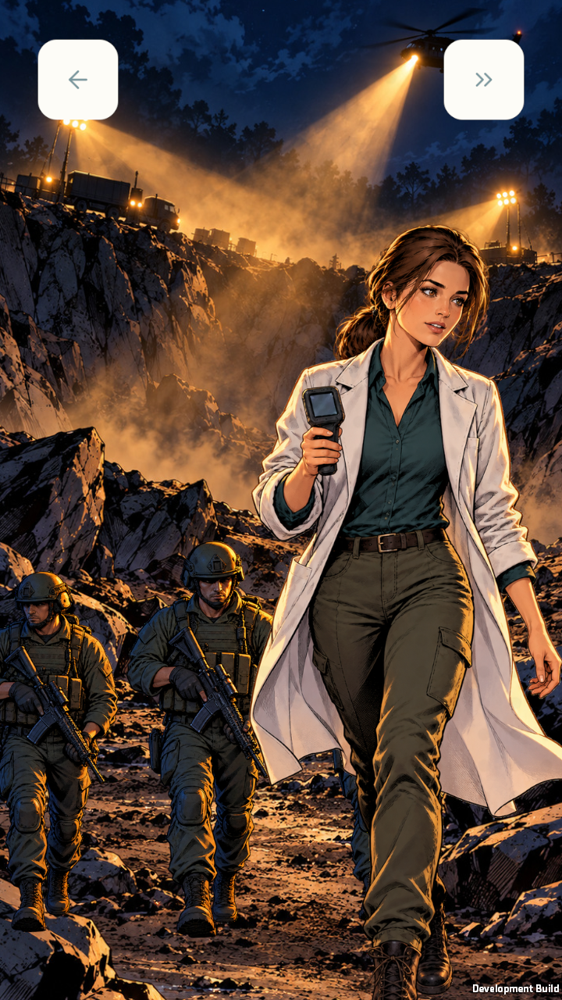
Back hoặc Skip; kết thúc trở về Menu.
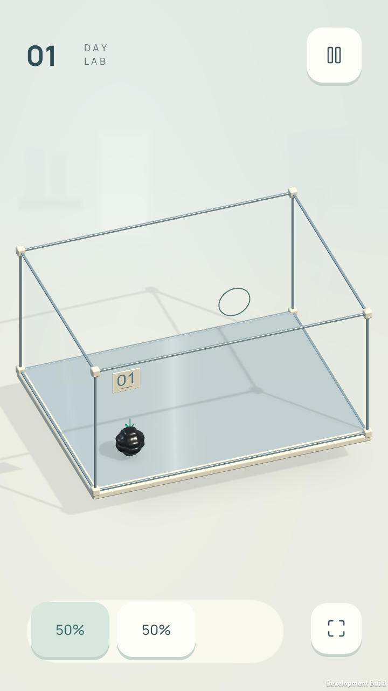
Fixture UI 50/50, không phải cơ quan chia tại màn 1.
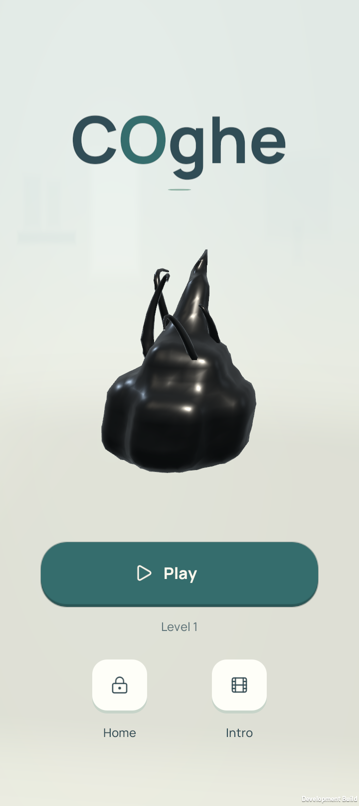
720 × 1612; bố cục thích ứng tỷ lệ dọc.
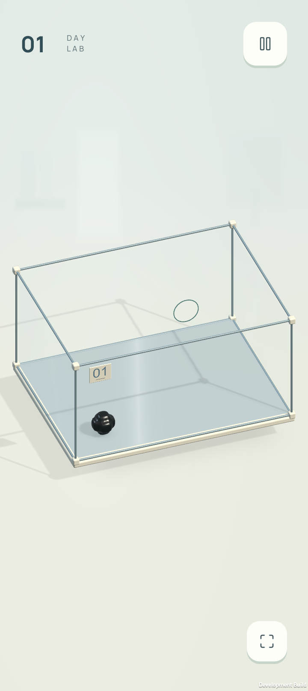
Giữ khoảng trống cho thao tác.
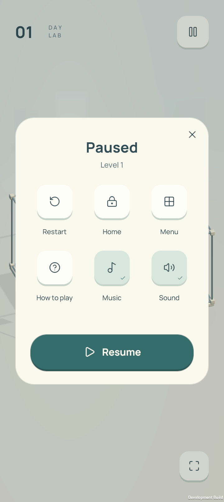
Các vùng bấm tối thiểu 48 px logic.